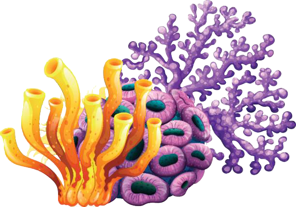

Terumbu Karang
Terumbu karang atau koral banyak tumbuh di pesisir daerah tropis, seperti di Indonesia. Umumnya koral akan tumbuh secara koloni dalam jumlah yang cukup besar. Ekosistem yang terbentuk di sekitar area koral ini memiliki nilai ekologis dan ekonomis yang besar. Secara ekologis, ekosistem terumbu karang ini menjadi rumah bagi biota lainnya yang bernilai ekonomis tinggi, sehingga nilai ekologis ekosistem koral sama dengan nilai ekonomis dari ekosistem tersebut.
